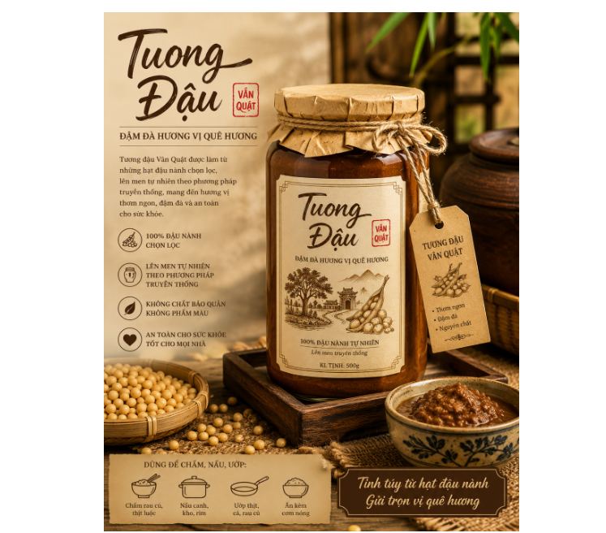

Giữa nhịp sống hiện đại, những hương vị truyền thống vẫn luôn có một sức hút rất riêng. Đó không chỉ là vị ngon của món ăn, mà còn là ký ức về căn bếp quê nhà, về những bữa cơm gia đình và những điều mộc mạc được gìn giữ qua nhiều thế hệ. Tương đậu Vân Quật được tạo nên với mong muốn lưu giữ và lan tỏa chính những giá trị giản dị ấy.
Được làm từ những hạt đậu nành được tuyển chọn, tương trải qua quá trình chế biến và lên men theo phương pháp truyền thống, tạo nên màu sắc tự nhiên, hương thơm đặc trưng và vị đậm đà. Từng mẻ tương là sự kết hợp giữa nguyên liệu quen thuộc, kinh nghiệm chế biến và sự chăm chút trong từng công đoạn, để mang đến một sản phẩm gần gũi, mang đậm hương vị quê nhà.

Điểm đặc biệt của tương đậu Vân Quật nằm ở hương vị mộc mạc nhưng đậm đà. Vị tương hài hòa, thơm bùi, phù hợp với nhiều món ăn trong bữa cơm gia đình. Một chén tương nhỏ có thể dùng để chấm rau luộc, thịt luộc, cá, đậu phụ; hoặc dùng làm gia vị để kho, rim, nấu các món ăn, giúp món ăn thêm thơm ngon và tròn vị.
Không chỉ là một sản phẩm thực phẩm truyền thống, tương đậu Vân Quật còn là câu chuyện về quê hương. Từ những hạt đậu bình dị, qua bàn tay người làm và phương pháp chế biến truyền thống, sản phẩm mang theo hương vị của làng quê, tình yêu với nghề và mong muốn đưa những sản vật gần gũi của địa phương đến với nhiều gia đình hơn.
Chúng tôi hướng đến việc xây dựng sản phẩm theo tinh thần chân thật – mộc mạc – chất lượng, giữ lại nét truyền thống nhưng đồng thời chú trọng hình thức, quy trình và sự tiện dụng để phù hợp với cuộc sống hiện đại.
Nếu bạn đang tìm kiếm một loại tương có hương vị quê nhà, dễ dùng và phù hợp với nhiều món ăn, hãy thử một lần trải nghiệm tương đậu Vân Quật.
Tương đậu Vân Quật – đậm đà từ hạt đậu, trọn vị quê hương.
Mỗi sản phẩm không chỉ mang đến một hương vị cho bữa cơm, mà còn góp phần kể câu chuyện về quê hương Vân Quật – nơi những giá trị bình dị vẫn được trân trọng, gìn giữ và tiếp nối.
Tương đậu Vân Quật – một chút tương, thêm tròn vị cơm nhà!
THÔNG TIN LIÊN HỆ
THEO DÕI CHÚNG TÔI